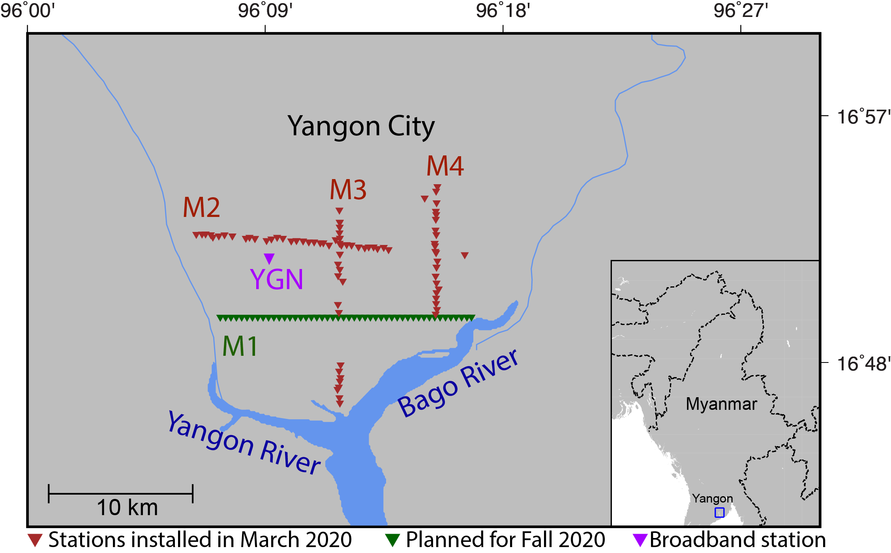
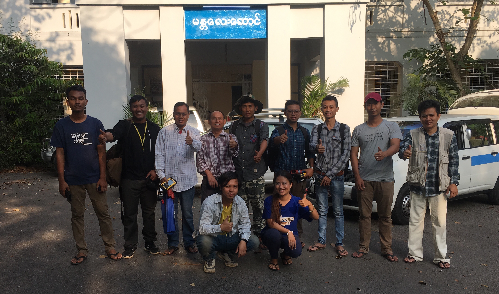
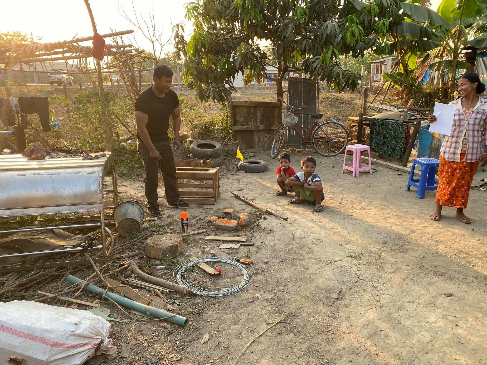
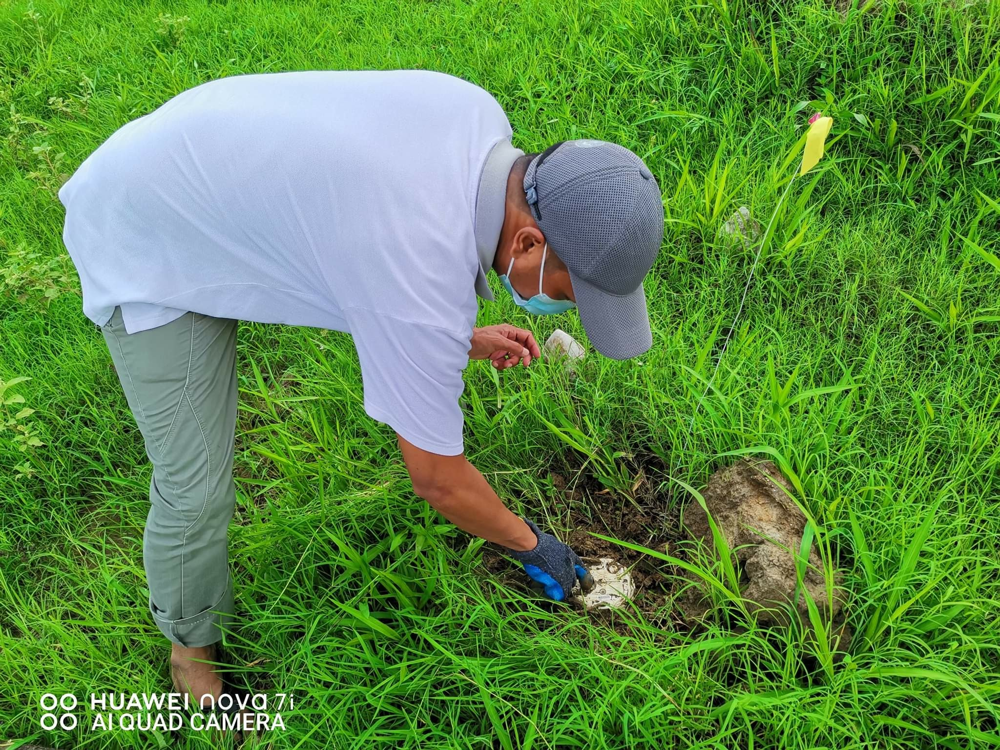

Our SEG Geoscientists Without Borders project page "Toward Improved Earthquake Hazard Assessment in Myanmar".
Link to our other research project in Myanmar: BIMA (Bangladesh-India-Myanmar Array)  FIG. 1 Location map of the Myanmar Universities Seismic Experiment (MUSE) seismic array in Yangon, Myanmar showing the 112 nodal seismometers in Myanmar (brown triangles) that were deployed in March 2020 and planned stations (green triangles). Source: Ghose et al. (2020).
Myanmar is often hit by earthquakes, floods, cyclones, landslides, and the severe effects from extreme El Niño phenomena. It is located at a complex plate boundary zone marked by the convergence of India with Asia and historic earthquake ruptures. More recently, it has been suggested that this region has a potential for Mw 8.2-9.0 earthquake. Understanding the potential effects of natural disasters such as large earthquakes that will continue to occur in Myanmar is a first step in mitigating impacts and properly assessing risk. This project along with in-country participants will develop earthquake monitoring procedures, computational tools and the infrastructure for improving seismic hazard assessment. Over a two year period the team will organize and lead workshops that cover hands-on training on computer software, seismic techniques, instrumentation, and communicating science to society.
 FIG. 2 Photo of the field team from the March 2020 seismic station installation in Yangon, Myanmar. The installation team is comprised of professors, lecturers and students from the Yangon region including the University of Yangon. From left to right [Back Row] Phyo Paing Than, Paye Phyo Lwin, Dr. Zaw Lin Kyaw, Dr. Myo Thant, Thiha, Aye Chit Min, Thet Naing Oo, Min Khant, Dr. Tin Myint Oo; [Front Row] Zin Myo Win and Thinzar Yadanar.  FIG. 3 One site where a nodal station was installed at a family's residence in the Yangon area by Paye Phyo Lwin, a University of Yangon student (on the left). The yellow flag marks the node location.Earthquake Hazard in Yangon
The seismic hazard beneath Yangon, the city with the largest population in Myanmar (~7.3 million) is largely unknown. Our project is focused on working with the local community to characterize the subsurface beneath Yangon city, which is located close to the Sagaing fault, a continental scale transform fault like the San Andreas fault that crosses through major population centers in Myanmar. We planned to deploy four seismic profiles in the city of Yangon (Figure 1) as this would be the most impactful location to collect seismic data and constrain basin amplification effects.
Three profiles comprised of 112 nodes (M2, M3 and M4 in Figure 1) were deployed in March 2020 and the instruments were retrieved in June 2020. Figures 2-4 show the deployment team and stations locations.
Our instruments arrived back in the U.S. in December 2020.
PUBLICATIONS (See Publications for meeting abstracts)
ACKNOWLEDGMENTS
The Myanmar Universities Seismic Experiment (MUSE) project is funded by SEG Geoscientists Without Borders. We thank students and professors from universities in Myanmar for their efforts to safely deploy and retrieve the nodes during the Covid-19 pandemic, and the PASSCAL Instrument Center for providing 120 nodes for this project and working closely with us to facilitate instrument transportation and logistics. We are grateful to the people at the seismic sites who permitted us to install our instruments and ensured the safety of the equipment.
 FIG. 4 Retrieval of a nodal seismic station in June 2020.